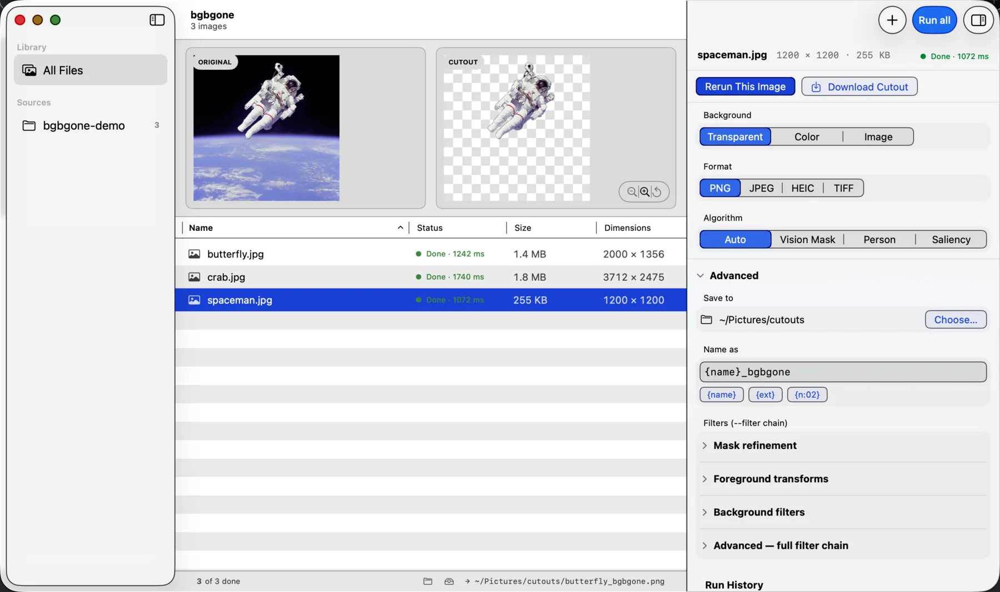
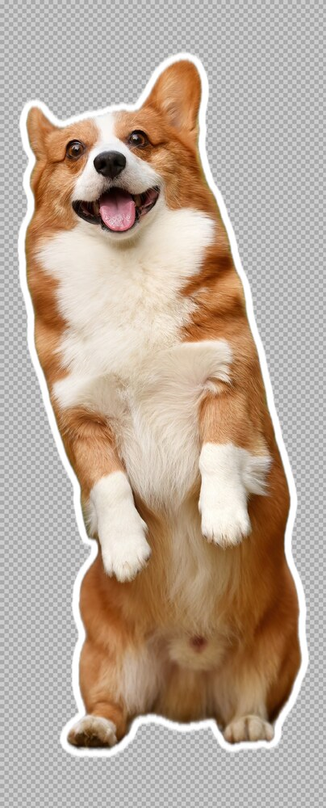

01 Cutout
$ bgbgone red-panda.jpgBackground remover for macOS. Image in, image out — Apple Vision, on-device, scriptable.
$brew install Arthur-Ficial/tap/bgbgone
3 MB binary. No cloud. No account.


The same on-device engine, in a native macOS window. Drop a folder, watch it process — end up with a folder of clean cutouts. Never touch a terminal.

$brew install --cask Arthur-Ficial/tap/bgbgone-app
Free · open source · signed & notarized · checks for its own updates.
$ bgbgone red-panda.jpg --algo autoperson shows only where Vision finds a person — never faked.
| 81ms | per image |
| 12.3/s | throughput |
| 3MB | binary |
| 0net | network calls |
| 0$ | forever |
brew tap Arthur-Ficial/tap
brew install Arthur-Ficial/tap/bgbgoneFrom source: make install. macOS 26+, no Xcode.
# default: writes photo_bgbgone.png next to input
$ bgbgone photo.jpg
# transparent PNG to stdout
$ bgbgone photo.jpg > cutout.png
# on a solid colour
$ bgbgone photo.jpg --bg color:white -o on-white.png
# on an image
$ bgbgone photo.jpg --bg image:beach.jpg -o beach.png
# pipe in
$ cat in.png | bgbgone > out.png
# batch a folder
$ bgbgone *.jpg --out-dir ./out/
# local HTTP API on 127.0.0.1:8787
$ bgbgone --server$ bgbgone red-panda.jpg$ bgbgone red-panda.jpg --bg color:#1a2233$ bgbgone red-panda.jpg --bg image:nebula.png$ bgbgone red-panda.jpg --bg image:red-panda.jpg --filter bg:grayscale$ bgbgone red-panda.jpg --bg image:red-panda.jpg --filter bg:blur=60$ bgbgone woman-singer.jpg --type person --bg image:woman-singer.jpg --filter bg:zoom-blur$ bgbgone corgi-puppy.jpg --crop --filter fg:outline=color=#fff:width=30
--bg color:<#hex|named|rgb:r,g,b>solid colour--bg image:<path>image file--bg-color <spec>shared solid colour field--bg-image <path>shared background image field--bg-fit cover|contain|tile|centerfit mode for image backgrounds--mask-onlyoutput the alpha mask only--channels rgba|alphafinalized image or alpha mask--feather <px>edge softening (default: 1)--threshold <0..1>mask binarisation--padding <px|N%>extra space around subject--crop-margin <1|2|4 values>API-style crop margins--croptight-crop to subject bbox--roi "x1 y1 x2 y2"region of interest, px or %--scale <10%..100%|original>scale subject on canvas--position <center|x% y%|original>place scaled subject--semitransparency true|falsekeep or harden semi-transparent pixels--shadowdrop shadow under cutout--shadow-type auto|drop|3D|car|noneshadow selector--shadow-opacity <0..100|auto>shadow darkness--algo auto|vn-mask|person|saliencydefault: auto--type auto|person|product|car|animal|graphic|transportationtype hint--multione file per detected instance--instance-naming "{base}-{n}.{ext}"filename template ({n:NN})--to, --format png|jpg|zip|heic|avif|tiffoutput format (default: png)--size preview|full|50MP|autooutput megapixel cap--quality 1..100for lossy formats (default: 92)-o, --output <path>explicit output file--out-dir <dir>batch output directory--serverrun local HTTP API--host <addr>bind address (default: 127.0.0.1)--port <n>bind port (default: 8787)--corsenable CORS for allowed origins--allowed-origins <csv>add allowed browser origins--no-origin-check | --footgundisable browser origin checks--token <secret> | --token-autorequire Bearer token--public-healthkeep /health public on non-loopback binds--max-body-mb <n>request body limit (default: 32)--json | --ndjsonstructured output--quiet | --verboselogging level--version | --help | -hmeta--checkcapability report| 0 | success |
|---|---|
| 1 | user error (bad input, refusing TTY) |
| 2 | parser error or no result |
| 3 | framework error (Vision unavailable) |